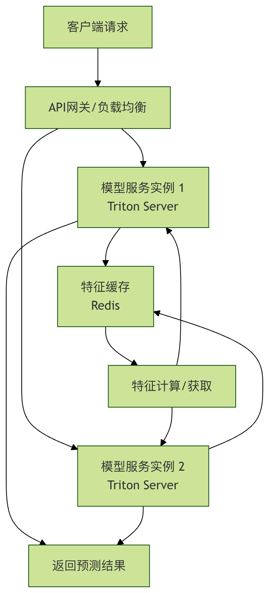

よくある問題のトラブルシューティング
機械学習プロジェクトをラボのプロトタイプから本番環境へ移行する際、予期しない一連の課題に直面することがよくあります。
モデルはトレーニングセット上で優れた性能を発揮するが、実際にデプロイすると効果が薄く、場合によっては完全に機能しなくなる。これは多くの機械学習エンジニアと初心者が経験するジレンマです。
本稿では、機械学習モデルの最適化とエンジニアリングの過程で最もよく見られるいくつかの問題を体系的に整理し、明確なトラブルシューティングの考え方と解決策を提供します。これにより、より堅牢で信頼性の高い機械学習システムの構築を支援します。
一、モデル性能の問題：訓練はうまくいくが、本番では機能が悪い
これは最も典型的で頭の痛い問題です。Jupyter Notebook ではモデルの精度が95%に達するのに、本番にデプロイすると効果が一気に落ちます。
1. データ分布の不一致
これは性能低下を引き起こす「最大の原因」です。トレーニングデータと本番のリアルタイムデータの間には統計分布の差異があります。
よくあるシナリオと確認ポイント：
特徴量エンジニアリングの不一致：オフラインの特徴量処理（正規化、ビニング、欠損値補完など）のコードと本番サービスのコードが完全には一致していません。
- 確認方法：オフライン前処理と本番前処理後のサンプルデータを比較します。使用する Scaler（例：
StandardScaler）本番ではオフラインでフィットしたパラメータを使用し（scaler.mean_,scaler.scale_）、再フィットするのではありません。
データ収集時間のずれ：トレーニングデータは過去3か月のデータですが、本番データは現在のものです。ユーザー行動や市場環境はすでに変化している可能性があります（コンセプトドリフト）。
- 確認方法：モデル入力特徴量の分布の時間変化を監視します。定期的に特徴量の平均、分散、分位数を計算し、トレーニングセットと比較することができます。
サンプル選択バイアス：トレーニングデータが全ユーザーを代表していない場合。例えば、アクティブユーザーのデータだけでレコメンドモデルを訓練すると、新規ユーザーやサイレントユーザーには機能しなくなります。
- 確認方法：トレーニングセットと本番リクエストのユーザー像の分布（新規・既存ユーザーの割合、地域分布など）を分析します。
解決策：完全な ... を構築するデータ監視とモデル監視システム。モデルの出力（AUC、精度など）を監視するだけでなく、入力特徴量の分布も監視する必要があります。ドリフトを検出したら、アラートを発動し、トレーニングデータの更新やモデルの再訓練を検討する必要があります。
例
import numpy as np
import pandas as pd
# これは本番でリアルタイムに受信した特徴量'feature_a'の値と仮定します
online_feature_values = [0.1, 0.5, 1.2, 0.8, 1.5, 2.0, 2.5]
training_mean = 0.5 # トレーニングセットにおける'feature_a'の平均値
training_std = 0.3 # トレーニングセットにおける'feature_a'の標準偏差
current_online_mean = np.mean(online_feature_values[-100:]) # 直近100点の平均値
# Zスコアを計算し、有意なドリフトが発生しているかどうかを簡単に判断します
z_score = (current_online_mean - training_mean) / training_std
print(f現在のオンライン特徴量平均: {current_online_mean:.3f})
print(fトレーニングセット平均とのZスコア: {z_score:.3f})
if abs(z_score) > 3: # 閾値、例：3標準偏差
print(警告：特徴量'feature_a'に分布ドリフトが発生した可能性があります！)
2. データリーク
モデルはトレーニング中に、予測時に初めて知るべき情報を「覗き見」するため、評価結果が実際より高くなります。
よくあるシナリオ：
- トレーニングセット/テストセットを分割する前にグローバルな正規化や欠損値補完を行った（テストセットの情報を使用した）。
- 時系列問題では、未来のデータを使って過去を予測する。
- 特徴量にターゲット変数と強く関連する「将来情報」が含まれています（例：「今日苦情があったかどうか」を使って「今日注文がキャンセルされるかどうか」を予測する）。
確認と解決：機械学習ワークフローを厳密に遵守しましょう。データからパラメータを学習する操作（Scalerのフィット、欠損値の補完、特徴量選択など）はすべてトレーニングセット上で行い、そのパラメータだけを使用して検証セットとテストセットを変換する必要があります。使用sklearnのPipelineこの問題をうまく回避できます。
例
from sklearn.preprocessing import StandardScaler
from sklearn.model_selection import train_test_split
# X, y は元のデータとラベルです
scaler = StandardScaler()
X_scaled = scaler.fit_transform(X) # 誤り！ここでは全データを使用してscalerをフィットしています
X_train, X_test, y_train, y_test = train_test_split(X_scaled, y, test_size=0.2)
# この時点でX_testの情報がscalerに「リーク」し、X_trainの変換にも影響を与えています
# 正しい例：先に分割し、その後それぞれ処理します
X_train_raw, X_test_raw, y_train, y_test = train_test_split(X, y, test_size=0.2)
scaler = StandardScaler()
X_train = scaler.fit_transform(X_train_raw) # トレーニングセットのみでフィット
X_test = scaler.transform(X_test_raw) # トレーニングセットでフィットしたパラメータを使用してテストセットを変換
二、エンジニアリングとデプロイの問題
モデルをファイルから安定してサービスを提供できる高可用性 API に変える過程には、落とし穴が数多くあります。
1. 環境依存関係とバージョンの競合
「私のマシンでは動くのに！」—— 古典的な難問です。トレーニング環境と本番推論環境のPythonバージョンやライブラリのバージョンが一致しません。
確認リスト：
- Python メジャーバージョン (3.7 vs 3.9)
- コアライブラリのバージョン（
tensorflow==2.8vstensorflow==2.12) - システム依存関係（例：特定のC++ランタイムライブラリに依存するライブラリ）
- モデルのシリアライズ形式（
pickleを使用して保存したモデルは、Pythonバージョンの差が大きいと読み込めない可能性があります）
解決策：
- コンテナ化：Docker を使用してモデルとそのすべての依存関係を1つのイメージにパッケージ化します。これは環境の一貫性を保証するゴールドスタンダードです。
- 依存関係管理：使用します
requirements.txt或environment.ymlすべてのパッケージとそのバージョンを正確に記録します。 - モデル形式：言語間、環境間で利用できるモデル形式を検討してください。例：ONNX 或 PMML、またはフレームワークネイティブの安全な形式（例：
TensorFlow SavedModel,PyTorch TorchScript）。
2. 本番推論性能の低下
APIの応答時間が長すぎ、スループット（TPS）が上がらず、ビジネス要件を満たせません。
よくあるボトルネックと最適化：
- 1回の予測のオーバーヘッドが大きい：モデル自体が複雑（例：大規模なディープラーニングモデル）。
- 最適化：モデルのプルーニング、量子化、知識蒸留、またはより効率的なモデルアーキテクチャでの書き換え。
- 頻繁なIOまたはネットワーク呼び出し：予測のたびにデータベースやリモートサービスから特徴量を取得する必要があります。
- 最適化：特徴量キャッシュ、事前計算を実装するか、特徴量をサービス化してレイテンシを削減します。
- ハードウェアアクセラレーションを活用していない：GPUに適したモデルをCPUで実行している。
- 最適化：モデルの種類に応じて正しい推論ハードウェア（CPU/GPU/専用AIチップ）と推論フレームワークを選択します（例：
TensorRT,OpenVINO）。
- 最適化：モデルの種類に応じて正しい推論ハードウェア（CPU/GPU/専用AIチップ）と推論フレームワークを選択します（例：
- サービングフレームワークの効率が低い：Flask を使用してモデルを直接ロードしており、並行処理能力が弱い。
- 最適化：高性能なMLサービングフレームワークを使用します。例：TensorFlow Serving, TorchServe、またはTriton Inference Server。これらはモデルのホットアップデート、動的バッチ処理、マルチモデルホスティングなどの高度な機能をサポートしています。

図：負荷分散、特徴量キャッシュ、専用モデルサーバーを含む高性能モデルサービングアーキテクチャの例。
3. リソース管理の不適切
モデルサービスのメモリリーク、または時間の経過とともにメモリ使用量が増え続け、最終的にサービスがクラッシュします。
確認方法：
- モデルのロード方法：リクエストのたびにモデルを再ロードしていませんか？正しい方法は、サービス起動時に1回メモリにロードし、後続のリクエストで共有することです。
- グローバル変数の蓄積：サービスコード内に、データを蓄積し続けてクリーンアップされないグローバルな List や Dict はありませんか？
- 大きな予測結果：返される予測結果（画像、大きなテキストなど）が大量のメモリを占め、適時に解放されていませんか？
解決：
- 使用
gunicorn、uvicornなどのマルチプロセス/非同期サーバーを使用する際は、そのWorkerモデルを理解してください。 - プロセス管理ツール（例：
systemd或supervisor）。 - 専門のメモリ解析ツール（例：
memory_profiler）を使用してリーク箇所を特定します。
三、モデル自体とアルゴリズムの問題
1. 過学習と未学習
これはモデル能力の根本的な問題です。
| 問題 | 現象 | 考えられる原因 | 解決策 |
|---|---|---|---|
| 未学習 | トレーニングセットと検証セットのパフォーマンスどちらも非常に悪い | モデルが単純すぎる（複雑度が低い）、特徴量が不足、トレーニングのエポック数が足りない | モデルの複雑度を上げる、有効な特徴量を追加する、トレーニングのエポック数を増やす |
| 過学習 | トレーニングセットのパフォーマンス非常に良い、検証セットのパフォーマンスは非常に悪い | モデルが複雑すぎる、トレーニングデータが少なすぎる、ノイズが多すぎる | トレーニングデータを増やす、正則化（L1/L2/Dropout）を使用する、モデルの複雑度を下げる、早期停止 |
調査手順：学習曲線を描くことは、適合状況を判断する最良の方法です。
2. 勾配消失/爆発
ディープニューラルネットワークのトレーニングでよく発生し、モデルが収束しない、またはトレーニングが不安定になります。
現象：
- モデルの損失が
NaN。 - 重みの値が極端に大きくなったり小さくなったりする。
- トレーニング初期に、損失値が変化しなくなる。
解決策：
- 重みの初期化：使用する
He初始化（ReLU活性化関数）またはXavier初始化(Tanh/Sigmoid)。 - 勾配クリッピング：閾値を設定し、勾配がそれを超えたらクリップする。
- バッチ正規化：活性化関数の前に追加する
BatchNorm層を追加すると、トレーニングが安定し、より高い学習率を使用できます。 - ネットワーク構造の調整：ResNetの残差接続などの構造を使用する。
四、体系的なトラブルシューティングプロセスの構築
オンラインのモデルに問題が発生した場合、体系的な調査プロセスがあれば迅速に特定できます。
- 問題の確認：全体の予測が誤っているのか、特定のユーザー層・シナリオに限るのか？エラー率はどのくらいか？
- 入力の確認：オンラインでエラーとなったリクエストデータを一括取得し、入力特徴量が完全か、形式が正しいか、数値が合理的な範囲か（例えば
NaN,Infや極端な値が出現するなど）を確認する。 - ローカルでの再現：オンラインでエラーとなった入力データを使用し、ローカル開発環境で同じモデルとコードを使って予測し、問題を再現できるか確認する。
- データの比較：オンラインリクエストのデータ分布とトレーニングデータの分布を比較し、ドリフトが存在するか確認する。
- コードと設定の確認：オンラインサービスのコードバージョン、モデルファイルのバージョン、設定ファイルが、テストに合格した環境と一致しているか確認する。
- ログとモニタリングの確認：サービスのログに異常なエラーがないか、監視システムのCPU、メモリ、応答時間の指標が異常でないか確認する。
- 簡素化と特定：可能であれば、極めて簡素なモデルやルールベースのシステムでエラーの入力を処理し、データの問題かモデルの問題かを判断する。
クリックしてノートを共有
ノートはこの記事の内容の拡張である必要があります！
記事投稿は、こちらをクリック
登録招待コードの取得方法
ノートを共有する前にログインが必要です！
登録招待コードの取得方法